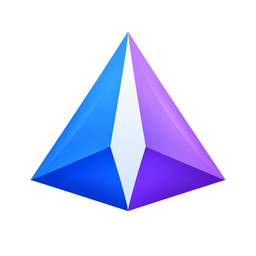

01
Find your way back.
Browse photos and videos, search your library, and gather images into albums or favourites.

Theoria Get the betaAndroid gallery · open source · beta
Theoria brings your photos and videos into one considered place to browse, organize, edit, and protect. It is built for the media already on your phone.
The public release is an offline, no-ML beta. Features and behavior may change as the project develops.
Release notes01 / Your library, in reach
Start with the moments you have. Find them again, make them yours, and decide what to keep close.
Browse photos and videos, search your library, and gather images into albums or favourites.
Edit, crop, rotate, set wallpaper, or cast a view to a nearby screen.
Inspect image and video metadata, then use the available tools to remove selected metadata.
Private folders, vault storage, encrypted media, and backup-related tools are part of the project.
These are beta features; their security properties have not been independently audited.Panoramas, motion photos, and additional image formats are supported through Android and bundled codec integrations. Compatibility depends on the media and device.
02 / Be clear about access
The default project configuration and first published beta are offline builds. Other build configurations can add maps and network providers, so the app’s behavior depends on the variant you install.
Read the build switches03 / First look
The current public APK is an ARM64, offline, no-ML build for Android 10 and newer. It is a development beta, not a stable release.
Use the project’s GitHub release page to check version details and the published file.
Android may ask you to allow installs from the browser or file manager you used to open the APK.
Grant media access to browse your library. All Files Access is a separate, broad setting; read the prompt before enabling it.
04 / Choose the right shape
These projects focus on different jobs. This is a quick orientation, not a ranking. Sources checked 31 October 2026.
Android gallery · beta
On-device browsing and media tools, with offline and optional network-capable build variants.
Project repositoryAndroid gallery · metadata explorer
Media discovery across albums, tags, maps, and a wide range of image and video formats.
Official projectAndroid photo & video gallery
A local gallery with editing, hiding, recycle bin, and interface customization features.
Official projectSelf-hosted library · mobile backup
A server-based photo and video library with mobile backup, shared albums, and web access.
Official projectCompare current release notes and requirements before choosing. Each project changes over time.
05 / For people who build
Theoria is a Kotlin and Jetpack Compose Android project. Builds use JDK 17 plus the Android SDK and NDK versions defined by the repository.
Compile · test · package
# Compile Kotlin
./gradlew :app:compileUniversalNoMLDebugKotlin
# Run JVM unit tests
./gradlew :app:testUniversalNoMLDebugUnitTest
# Build offline, no-ML APK
./gradlew :app:assembleUniversalNoMLReleaseMixed provenance, clearly marked. Independently authored files may use MPL-2.0; inherited code remains Apache-2.0, and bundled libraries, generated files, and assets keep their own terms. Read the license boundaries.
06 / Keep the conversation open
A few useful details
No. The current version is the first public beta, `0.0.1-beta-1`. Treat it as development software and keep a separate backup of important media.
The published beta is an offline build, and the repository's default configuration sets `OFFLINE=true`. Other build configurations can enable network providers or maps, so check which variant you are installing.
The project includes private-folder, vault, encrypted-media, and backup-related functionality. These are beta features; their security properties have not been independently audited.
The currently published APK is built for ARM64. The source has other ABI flavors, but a 32-bit release package is not listed on the current release page.